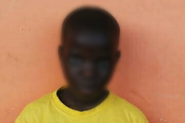
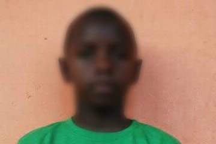
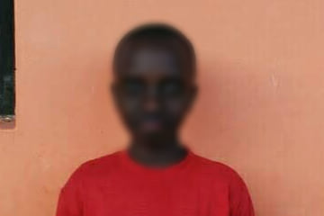
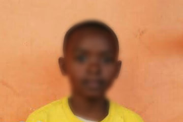
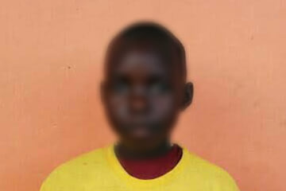

ABI Uganda partnership · Project archive
School fee support for six Royal Junior pupils
Helping pupils complete primary school and progress to secondary education
Historical education support report
Six pupils at Royal Junior Namugongo received school-fee support when their families could not fully finance their education. Support was delivered through ABI using funds raised by pupils at Wilhelm-Remy-Gymnasium Bendorf. The project account reports that all six pupils completed primary education and progressed to secondary school.
Keeping education within reach
School costs can interrupt a child’s education when a family cannot meet the full fees. The initiative helped meet those costs for six Royal Junior pupils so that financial pressure did not bring their primary schooling to an early end.
Anchored Bridges Initiatives (ABI), formerly Ability Beyond the Iris, supported the pupils through its local partnership. Royal Junior Namugongo is distinct from Royal College Namugongo, the secondary and parent school. The older students in white shirts in the companion school report belong to Royal College.





Pupil fundraising supporting continued learning
The school-fee support formed part of the AktionsWerk pupil-led fundraising project. It drew on the same approximately €7,000 fundraising pool that also supported school materials, accessibility work and the Rwengoma feeding initiative.
The project team reports that all six supported pupils completed primary school and joined secondary education. Their continued learning was the central outcome of the fee support.
We thank the pupils and staff of Wilhelm-Remy-Gymnasium Bendorf, the families and school communities, ABI and everyone who helped the six pupils continue their education.

Download the project report as a PDF · Download the editable Word report
Programme figures and outcomes are reported by the project team.